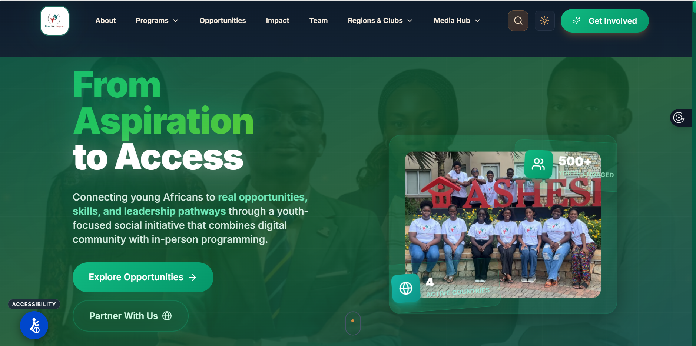

Social Impact × Technology
Live · 2025
Rise for Impact Platform
Pan-African Youth Empowerment Ecosystem
Challenge
African youth face fragmented access to mentorship, leadership development, and international opportunities. Existing platforms lack localized context and community-driven design tailored to African contexts.
Solution
Full-stack Next.js platform with TypeScript, React, Prisma ORM, and PostgreSQL. Core features include fellowship applications, content management system, opportunity marketplace, administrative dashboard, and real-time analytics.
Implementation
- Architected user-centric platform supporting multi-country program delivery
- Developed volunteer coordination system connecting mentors with mentees
- Implemented program tracking and engagement analytics infrastructure
- Deployed platform serving 500+ youth across 4 African countries
Outcome
500+
Youth Engaged
4
Active Countries
Active
Platform Status
Roadmap
Expanding to 15+ countries with AI-powered mentor matching, mobile application development, and strategic partnerships with educational institutions across Africa.